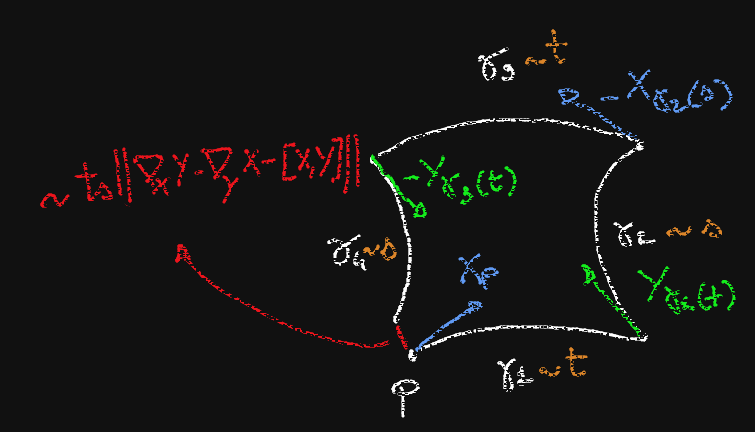

Once we have a connection on a manifold $M$, we define the parallel transport along a curve: if $\gamma:I\to M$ is such that $\gamma(a)=p$, $\gamma(p)=q$, for each $X_p\in T_pM$ we have a unique vector-field $X$ along $\gamma$such that $X(a)=X_p$ and $dX/dt\in HTM$ at all points or, equivalently, $\nabla_{\dot{\gamma}}X\equiv 0$. Then $$\tau_{pq}^\gamma X_p=X_{\gamma(b)}\;.$$
Now, consider two vector-fields $X,Y$ defined in a neighborhood of $p$; given $t,s>0$ very small, let
Note that the four curves do not necessarily close in a "parallelogram"; if we set up local coordinates where $p$ is the origin, the point $\gamma_4(s)$ is a function of $X$, $Y$, $t$, $s$ whose coordinates have the following Taylor expansion in $t,s$ is$
$$x^j(t,s)=ts(\Gamma^{j}_{ih}X^iY^h-\Gamma^{j}_{ih}Y^iX^h)+o(t^2+s^2)=ts(\Gamma^j_{ih}-\Gamma^j_{hi})X^iY^h + o(t^2+s^2)\;.$$
Therefore, the four curve "close" at second order if and only if $\Gamma^j_{ih}=\Gamma^j_{hi}$, so if and only if the covariant derivative of the connection is torsion free, i.e. $\nabla_XY-\nabla_YX-[X,Y]=0$.
Once we impose that the torsion vanishes, if we use the curve $\gamma$ (obtained by following the four sides from $p$ to $q=\gamma_4(s)$) to operate a parallel transport from $T_{p}M$ to $T_qM$, the difference between $Z_q$ and $\tau^\gamma_{pq}Z_p$ depends, at the first non trivial order, only on $ts$:
$$Z^j_q-\tau^\gamma_{pq}Z^j_p=ts(\partial_m\Gamma^j_{ih}-\partial_i\Gamma^j_{mh}+\Gamma^l_{ih}\Gamma^j_{ml}-\Gamma^l_{mh}\Gamma^j_{il})Z^hX^mY^i+o(ts)$$
which, surprinsingly, can be re-written as $$Z_q-\tau^\gamma_{pq}Z_q=ts(\nabla_X\nabla_YZ-\nabla_Y\nabla_XZ-\nabla_{[X,Y]}Z)+o(ts)$$
Given a connection $v:TTM\to VTM$, we saw that in the torsion-less case (i.e. when the associated covariant derivative satisfies $\nabla_XY-\nabla_YX=[X,Y]$), the non-commutativity of parallel transport depends, at the first non trivial term, from a global object.
The curvature of the connection $v$ (or of the covariant derivative $\nabla$) is the field of trilinear forms $$R_p(\cdot,\cdot,)\cdot:T_pM\times T_pM\times T_pM\to T_pM$$ which, for $X,Y,Z\in\mathfrak{X}(U)$, $U$ a small neighborhood of $p$, is given by $$R(X,Y)Z=\nabla_X\nabla_YZ-\nabla_Y\nabla_XZ-\nabla_{[X,Y]}Z\;.$$
In local coordinates, we write $$R^{h}_{ijk}=(\partial_j\Gamma^h_{ki}-\partial_k\Gamma^h_{ij}+\Gamma^l_{ik}\Gamma^h_{jl}-\Gamma^l_{ij}\Gamma^h_{kl})$$
The second covariant derivative is the operator defined by $$\nabla^2_{X,Y}Z=\nabla_X(\nabla_Y Z)-\nabla_{\nabla_XY}Z$$ for $X,Y,Z$ vector-fields.
When applied to a function $f$ (as opposed to a vector-field $Z$), with the Levi-Civita connection, the expression above gives the Riemannian Hessian of $f$ and we know that it is symmetric in $X$, $Y$. In general, however, this symmetry does not hold and we have $$R(X,Y)Z=\nabla^2_{X,Y}Z-\nabla^2_{Y,X}Z\;.$$
We lower the upper index of $R$, by defining $R(X,Y,Z,T)=g(R(X,Y)Z,T)$.
The Riemannian curvature is a complicated object. The first idea could be to look at it along curves, however, we need at least $2$ independent vector-fields to have a non trivial result (curves are flat!).
Let $P\subset T_pM$ be a two dimensional plane, then the sectional curvature of $M$ is the function $P\mapsto \kappa(P)$ where $$\kappa(P)=g_p(R(X_p,Y_p)X_p,Y_p)$$ with $\{X_p, Y_p\}$ an orthonormal basis of $P$.
If we knew the function $\kappa(P)$ for all planes and all points of $M$, we could recover the curvature $R$.
A Riemannian manifold $(M,g)$ is said to have constant (or positive, or negative) curvature if its sectional curvature is constant (or positive, or negative).
If the curvature vanishes, the manifold is said to be flat.
If we fix one of the two tangent vectors in the expression of the sectional curvature and consider a suitable mean on all the planes that contain such vector, we obtain a quadratic form in the other tangent vector; its polarization is a symmetric form which is called Ricci curvature.
The Ricci curvature at $p$, evaluated at $X_p, Y_p\in T_pM$ is denoted by $\mathrm{Ric}_p(X_p,Y_p)$ and it is the trace of the endomorphism of $T_pM$ given by $v\mapsto R_p(X_p,v)Y_p$.
If $E_1,\ldots, E_k$ is an orthonormal basis of $T_pM$, by definition of trace, we have $$\mathrm{Ric}_(X_p,Y_p)=\sum_j g_p(R(X_p,E_j)Y_p, E_j)$$
And, in local cooridnates, $R_{ij}=\mathrm{Ric}(\partial_i,\partial_j)=R^k_{ijk}$.
Again taking the mean on all the directions, we obtain the scalar curvature
The scalar curvature at $p$ is the trace of the Ricci curvature as a symmetric bilinear form on $T_pM$.
With respect to an orthonormal basis of $T_pM$, we have $$R(p)=\sum_{i\neq j}g_p(R_p(E_i,E_j)E_i, E_j)=\sum_{i\neq j}\kappa(P_{ij})$$ where $P_{ij}=\mathrm{Span}\{E_i, E_j\}$. In local coordinates, $R=g^{ij}R_{ij}=g^{ij}R^k_{ijk}\;.$
Let $M$ be an embedded submanifold of $\overline{M}$. If we have a Riemannian metric $\bar{g}$ on $\overline{M}$, we can define a metric $g$ on $M$ just by restriction: if $X_p, Y_p\in T_pM$, then also $X_p, Y_p\in T_p\overline{M}$, so we set $g_p(X_p,Y_p)=\bar{g}_p(X_p,Y_p)$.
Given two connections on $\overline{M}$ and $M$ compatible with the metrics, with covariant derivatives $\bar{\nabla}$ and $\nabla$, the difference $$h(U,V)=\bar{\nabla}_UV-\nabla_UV$$ is called vector-valued second fundamental form of $M$.
It can be showed that $h_p(X_p,Y_p)\in N_pM$, i.e. the second fundamental form takes values in the normal bundle of $M$.
For the Levi-Civita connections, the following hold, for $X,Y,Z,W$ tangent vector-fields on $M$
$$g(\bar{R}(X,Y)Z,W)=g(R(X,Y)Z,W)+g(h(X,W), h(Y,W))-g(h(X,Z), h(Y,W))$$
$$(\bar{R}(X,Y)Z)^\perp=(\nabla_Xh)(Y,Z)-(\nabla_Yh)(X,Z)$$
These equations allow to recover the behaviour of the ambient curvature along $M$ from the curvature of $M$ itself and its second fundamental form.